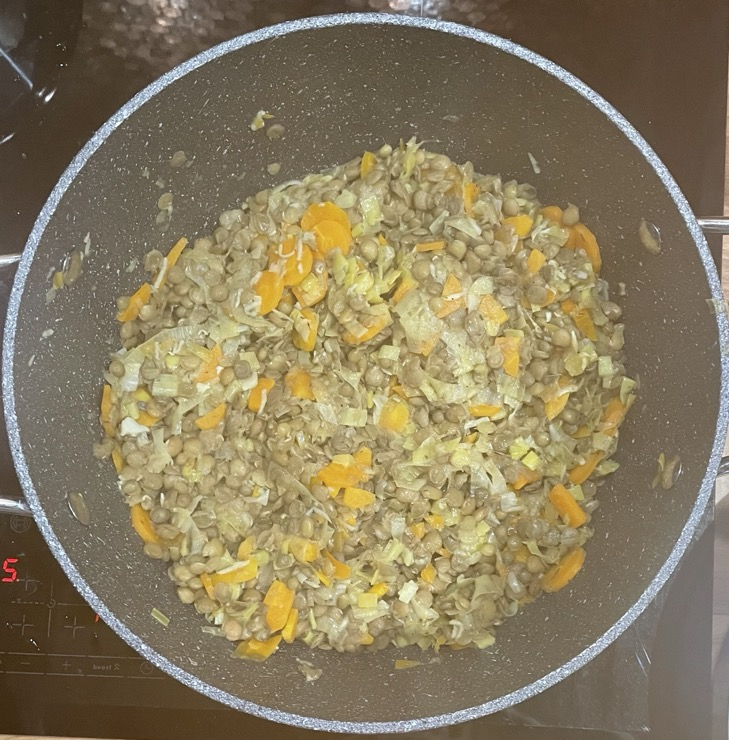

Green lentils & veg
Lentils
- Cook until soft
- 250g green lentils presoaked
- water enough to cover lentils by 7cm
Dressing
- Mix
- 33ml (30g) olive oil
- 6ml sherry vinegar
- 4ml red wine vinegar
- 2 tsp Dijon mustard
- 1 tsp caster sugar
Veg
- Heat until soft
- olive oil
- 2 carrots diced
- 3 sticks celery diced
- 2 leeks leeks sliced
- 3 cloves garlic grated
- 90ml white wine
- 1 tsp thyme
- ¼ tsp salt
- Add
- lentils
- black pepper
- splash of water
- Mix in
Serving
- Cod & pesto on side
- Burrata broken up on top of lentils
Notes
- Original recipe: Polpo, p218
Pics
